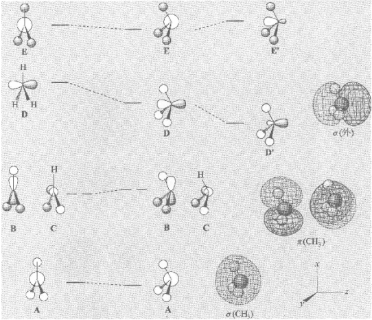
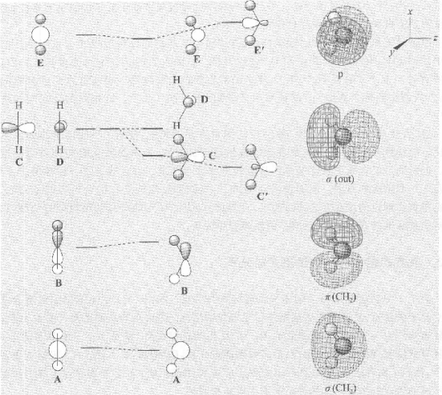
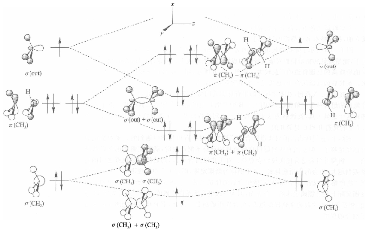
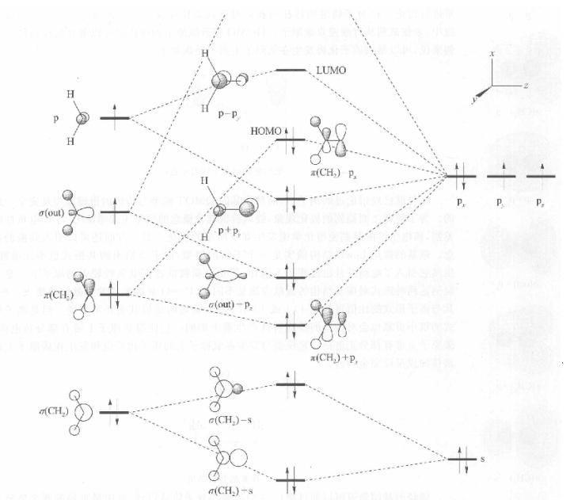
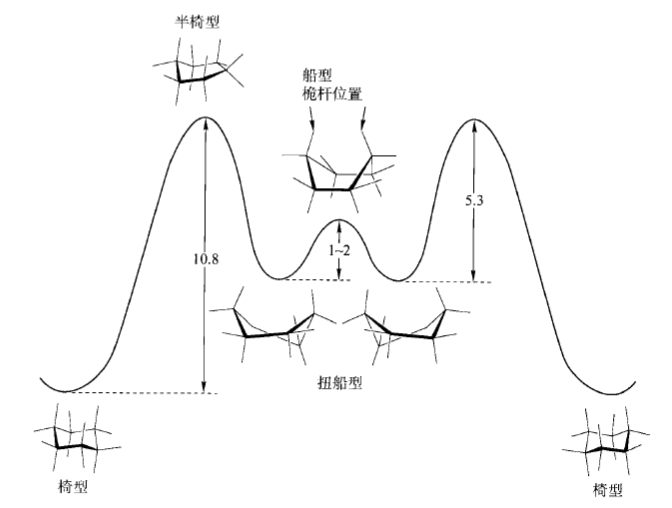

导论：分子结构和化学键模型
原子的Bohr模型认为电子在特定轨道上运行。原子轨道是解Schrodinger方程得来的。
薛定谔方程的解是波函数。包括四个量子数，主量子数（决定该原子的价层），角量子数（或者描述为spdf，定义空间分布），磁量子数（决定轨道在空间中的方向），自旋量子数（可以取$\pm 1/2$）
能量最低原理要求电子填充能量较低的轨道，Pauli原理要求同一轨道需要自旋配对，洪特规则告诉我们简并轨道只需要逐个填充保持自选方向一致。
Lewis结构和形式电荷只是一种记录方法。
价电子互斥规则（VSEPR）：配基在空间上会尽量互相原理，这决定了分子的几何构型。孤对电子比较“大”一些，只是对观察现象的一个合理解释。
Pauling提出杂化理论，sp，sp2，sp3杂化轨道常用来解释有机分子的几何形状。杂化理论为键角偏差提供一个能替代VSEPR的解释：s成分减小，键角逐渐减小。
化学键理论主要有两种：价键理论（VBT）和分子轨道理论（MOT）。
价键理论中，相邻原子共享电子对形成分子。从价键理论和杂化过程派生而来$\sigma$键和$\pi$键的概念。两个原子之间的成键数目称为键级。分子轨道实际上是VBT/MOT混合模型的结果。
具有不均衡共享成键电子的共价键称为极性共价键。
电负性：Pauling电负性是分子中一个原子吸电子的能力，Mulliken定义电负性是电子亲和势和离子势。F是电负性最大的元素。
静电势能面首先给分子一个表面，把每个原子当成半径等于其van der Waals半径的球。然后根据静电势对该表面着色。
诱导效应是电负性更强的原子或基团通过$\sigma$键吸电子的现象。一些情况如1-氯代丁烷中会呈现电荷正负交替变化的模式。
基团电负性：CH3基团和C是一样的，CF3与O相当，拥有完整正电荷有最强的基团电负性（如NH3+）
杂化效应：一般而言，电负性sp>sp2>sp3。
电负性和杂化理论解释氨分子或水分子键角小于甲烷分子：孤对电子包含更多s轨道成分，这样与H形成的键包含更多p轨道成分，从而减小键角。
多数情况下，电负性和杂化理论比VSEPR更合理。
键偶极是极性共价键相关的局部例句，定量计算用偶极矩$\mu$（是电荷与距离的乘积）。分子偶极矩是分子固有的明确属性。
在对分子电荷分布的完整描述中，有单极、偶极、四极、八极、十六极等。离子中单极占主导地位，中性分子一般忽略偶极之后的项。最常见的四级矩是苯分子中的。
共轭也被称作中介现象，苯环的Kekule式就是一个例子。共振结构越多分子越稳定，称之为共振能或者离域能。
共振结构合理的一些准则：原子满足惰性气体的电子构型，形成最大数目的共价键等等
键长的影响因素：
- 多重键倾向于更短
- 杂化s性质越多，键长越短（有时候这个因素会被低估）
- 原子半径
极化率是一个单位电场梯度能诱导的偶极大小。极化率和电负性呈现负相关。
现代理论
分子轨道理论认为电子位于高度离域的分子轨道中，这些轨道遍布整个分子。
定性分子轨道理论（QMOT）是预测离域分子轨道的一系列规则（见Gimare，1979）
实例分析：平面型甲基
成键轨道ABC，非键轨道D，反键轨道E和另外两个

Walsh示意图：角锥形甲基
最大的变化是D是成键轨道。A的能量少量变低，BC能量升高。之后DE有相同的对称性，两者组合成D’E’。

官能团的轨道称为基团轨道。甲基的基团轨道赋予了特定的名字（如上图），MH3的结构都是如此，而根据不同的M决定放入电子数目以及角锥形还是平面型。
Walsh示意图：CH2
分析方法是类似的。

游离态H2O两对孤对电子不等价证明了这一点。而在液态水中，由于其他分子的影响，体系对称性降低，C’和D可以组合成类似sp3的孤对电子轨道。
组合两个独立分子全充满轨道的结构都是去稳定的，称为闭壳层排斥。
微扰理论：简并轨道的组合称为一阶微扰，非简并轨道的组合称为二阶微扰。
初始轨道之间能量差别越大，组合作用越弱，称为能阈定理。
分子组合实例分析：乙烷
主要C-C成键轨道是$\sigma(out)+\sigma(out)$分子轨道。

乙烯分子中双键主要$\sigma$键是$\sigma(out)+\sigma(out)$，$\pi$键是$p+p$。LUMO是p轨道的反相组合。
实例分析：甲醛

甲醛和乙烯是等电子体，结构相似。不同的是HOMO是$\pi(CH_2)-p_x$的孤对电子轨道，下面第二个也是孤对电子轨道。
完全离域甲醛应该有两个不同的孤对电子轨道。
甲醛分子作为羰基原型，注意到其$\pi^*$分子轨道可以预测亲核试剂会从背面进攻碳原子，而质子化将发生在氧原子上。
更复杂的烷烃：$CH_3(CH_2)_nCH_3$，其中C-C骨架处理方式和$H_2O$类似，用$\sigma(out)$轨道和p轨道形成$sp^3$杂化，而两端的甲基用$\sigma(out)$连接C-C骨架。
丙烯：甲基的$\pi(CH_3)$与烯烃的$\pi$轨道形成新的分子轨道。

三中心二电子键：缺电子的情况，如硼烷/碳正离子，会形成B-H-B这样的桥结构。
反应中间体
碳正离子
两种类型：三配位碳正离子$R_3C$，五配位碳正离子$R_5C$/三中心二电子键
经典碳正离子的模式分子是甲基正离子，因为D轨道没有电子，它更容易形成平面构型。乙基正离子在液相/气相中会很快重排成一个C-H-C的桥结构。
非经典的碳正离子代表是$CH_5^+$可以看作角锥形$CH_3^+$的$\sigma(out)$和$H_2$的$\sigma$成键轨道连在一起，这里形成三中心二电子键结构。$CH_5^+$存在一个快速重排过程，使得5个H完全等同。
碳负离子
简单的角锥形碳负离子结构中，碳负离子的$\sigma(out)$有一对孤对电子，可以看成$sp^3$杂化。翻转能垒比较低，因此碳负离子表现出平面构型的性质。
几个因素可以显著增大碳负离子的翻转能垒，一个是形成小环，另一个是连接一个电负性强的取代基（此时更多电子得以稳定）。
自由基
甲基自由基有七个电子，单电子占据$\sigma(out)$轨道，所以他对于平面形/角锥形没有明显倾向。
另有自由基正离子，比如单电子氧化的烯烃。
碳烯（卡宾）
模式分子为亚甲基（$CH_2$），6个电子中两对占据AB，剩下两个占据C/D简并轨道。根据体系自旋状态，分为三线态和单线态。
简单烯烃倾向于三线态，适当引入取代基（N、O、卤素）可以改变这一倾向。
张力和稳定性
能量的类型
Gibbs自由能：
只关心相对能量([]表示浓度)
自由能包括焓$\Delta H$和熵$\Delta S$两部分，他们的联系可以用Gibbs-Helmholtz方程式来表示
焓是恒压不做工的情况下，分子不同组分热量的变化。考察的办法就是考察化学键强度的变化。
熵是体系混乱度，也就是自由度（包括平动/转动/振动自由度）。熵变在比较相似结构时通常很小，而在结构显著变化（如成环）时非常重要。
环化的熵损失随着环增大而增大（环己烷是个特例）。
键解离能（BDE）
与键强度相关的热力学量，定义
一般结论：键长越短，键就越强。
卤代甲烷：F>Cl>Br>I
杂化和共振：C(sp)-H>C(sp2)-H>C(sp3)-H
O-H是最强的化学键之一，因此羟基自由基具有很强的反应活性。
键伸缩
简正模式是分子具有的振动自由度，每一项都有各自的基频，每一种基频都可以用一个势能函数来描述。
键伸缩的简单势能函数Morse势能函数描绘能力与原子间距离的关系。Morse势能函数的形状表明它是一个非简谐共振子。
化学键的伸缩收到Morse势能函数的限制，其振动的能量是量子化的。因此化学键不是Morse势能最低点，而是零点能（ZPE）。
可以认为化学键伸缩振动导致其均裂，BDE=ZPE和无限远点的差值。
生成热和燃烧热
总能量定义为断裂分子内所有化学键的能量，生成热定义为从组成元素形成分子放出的热量。生成热直接测定比较困难，可以通过CO2和H2O进行测定。
苯热力学不稳定，但是动力学是稳定的。
基团加和法
基团贡献也称为Benson增量。基团加和法的准确程度取决于到处基团贡献值的热力学实验数据的准确程度。
特定基团对熵也有固定的贡献值，但实验数据比较匮乏。
基团加和法可以计算有机分子的标准生成热，对环己烷的结果是准确的，但对其他环烷烃结果不尽如人意。因此需要引入张力能，这就是实验测定标准生成热和基团加成法的差值。
反应中间体的热化学
持久性是指寿命比较长，是动力学概念。稳定性是反应中间体的内在特性。
1900年Gomberg制备了三苯基甲基，这个自由基能够在室温溶液中永久稳定存在，其影响持久性的主要因素是位阻效应。
可以用氢负离子的亲和性（HIA）来衡量碳正离子的稳定性。定义如下
裸露在气相中的离子迫切需要溶剂化，而小的离子增加碳原子可以缓解这种需求，所以正离子越大越稳定。而碳原子个数对自由基影响不明显。
气相中二级与一级碳正离子的区别比烯丙基的共轭效应重要的多。而烯丙基正离子比丙基正离子文登的多。
比较稳定的三级碳正离子在水中的寿命约为$10^{-10}$s。
衡量碳负离子的稳定性用下面的反应式
可以用$pK_a$（酸在水中平衡解离常数的负对数）来衡量稳定性
$pK_a$越大离子越不稳定
基本构象分析
非环体系：扭转角的势能面
乙烷的交叉构象比重叠构象更稳定，两者相差3 kcal/mol。重叠构象的势能以扭转张力的形式存在。
丁烷中考察绕C2-C3键的扭转势能，对交叉式比邻交叉式稳定0.9 kcal/mol，这种作用叫临近排斥。
临近排斥对基团加成法的校正称为邻交叉校正，另一个常见的校正是顺式烯烃校正。顺式构型的烯烃标准生成热增加1 kcal/mol。
$CH_3-X$键的旋转能垒随X的增大而增加。孤对电子带来排斥作用要比C-H键的排斥作用小，所以C-O/C-N键的旋转能垒比C-C键低。
四烷基乙烷中则是对交叉式和邻交叉式完全一样稳定。
g+g（邻交叉式排布）戊烷作用会导致同侧戊烷张力，g+g比g-g不稳定约3 kcal/mol。与此相类似的一种现象是烯丙基张力，简称为A张力，因为这个原因，顺式烯烃倾向于线性构象。
基本环形体系
环丙烷张力能是27.5 kcal/mol，主要来自于偏离正常值的键角。
环丁烷平面构象会导致C-H发生不利的重叠，因此会发生折叠。两种折叠构象之间反转称为蝴蝶翻转，转化所需能垒很小。
环戊烷也会发生折叠，得到信封型构象和半椅型构象。这两种构象能量几乎相同，他们之间转化非常迅速，其能垒小于2 kcal/mol，这个转换称为伪旋转。
环己烷采用刚性的椅型构象。考虑邻交叉作用，因此推断平伏位置比直立位置的取代基更稳定。对大多数取代基而言，平伏位置比较有利，这种选择性的强弱叫做环己烷的A值。

更大的环系：一般而言，环越大张力能越小。n=6时张力能很小是个特例。中等环的张力来源于跨环张力。
源自非标准键角的张力叫做键角张力（Baeyer张力）。环中张力一部分也来自扭转角，称为Pitzer张力。
大环中能垒通常比较小。
双环共享一个碳原子，称为螺环；共享两个碳原子，称为桥环，两个碳原子称为桥头碳。萘烷就是双环[4,4,0]癸烷。
小环中的烯键比非环体系中的烯键减稳定作用更大。
Bredt规则判断双环体系中的桥头是否能引入烯键：桥环[a,b,c]烷烃中，三者之和下限为7。处于桥头位置，存在很大张力的烯键也称为反Bredt规则烯烃。
电子效应
$\pi$体系的作用
衡量烯烃稳定性的一种方法是测量它的氢化热，对于大多数常见烯烃而言，氢化热约为
-27.75 kcal/mol。
烯键的直接相连称为共轭，共轭可使$\pi$分子轨道在所有$sp^2$杂化的碳原子间离域。离域能够稳定$\pi$体系，但这一般不是个非常大的效应。
芳香性的Huckel 4n+2规则，对任何具有4n+2个电子的碳氢化合物或者杂环化合物，如果形成完全的共轭的环状$\pi$体系，则具有芳香性。通常认为22个电子是芳香性体系的上限。
芳香性分子的稳定超乎想象。在化学性质上表现为易进行亲电取代反应，不易进行加成反应和氧化反应。
不完全共轭的环也可能有芳香性，称为同芳香性。
定量描述芳香性的稳定化能的一种分析方法是等键反应。据此推算芳香性对苯环的稳定化能为32 kcal/mol。
有4n个电子的$\pi$体系通常是不稳定的，称为反芳香性。
杂原子影响
键长效应：C-O和C-N键比C-C键短，这通常增加立体张力。
轨道效应：考虑为给体-受体相互作用，较高能量的占据轨道向较低能量的空轨道提供电子，产生稳定作用。
糖化学中的异头效应是反立体位阻的倾向，表现为糖苷键和缩醛碳原子上的链接倾向于直立而非平伏，这种倾向来源于环外C-O键与环内氧原子孤对电子处于反式。
高张力分子
C-C键键长通常小于等于1.59A，超长的C-C键都是热力学不稳定的。造成超长C-C键长/超大C-C-C键角的首选方法是立体位阻（如六苯基乙烷）。
一些小环是热力学不稳定，但动力学稳定的（如四面体烷）。
旋转能垒特别大以至于能够分离不同构象异构体的称为阻转异构体。一种方法是造成大的立体位阻，如利用三苯烯构造的二甲基双三蝶烯。
分子力学
分子力学的基本概念就是：体系的总能量可以表示为若干独立能量项之和，包括键伸缩能，键角弯折能，二面角的扭转能等。这个模型没有得到理论论证，因而分子力学被称为经验力场。
伸缩能定义为经典的Hooke势能+三次方项
键角的弯折
二面角的扭曲
B=1则交叉式优势，B=-1则重叠式优势，n是能垒多重度
现代力场中一般考察单重、双重、三重项之和。
非键相互作用
其中$\epsilon$和$r^*$取决于原子类型，r是原子间距离。注意到r大时为吸引，r小时为排斥。
其他还有交叉项、静电作用、氢键等等。
没有唯一的最好的立场。
得到合理地结构比得到值得信赖的相对能量容易。
主要预测气相中的性质。
比量子力学快得多。
溶液
液体是短程有序，一个溶剂分子周围很好的发现一层距离最近的临近溶剂分子，但更多层分子距离不确定。
溶剂可以分为质子性和非质子性、极性和非极性。
一般通过介电常数$\epsilon$判断极性。
其他溶剂指标还有溶剂化显色作用，指溶剂诱导的生色团或荧光团的光谱形状/强度。常用两个标度，Z标度和$E_T$标度。
确定溶剂形成氢键能力的标度有$\alpha$标度测量溶剂对溶质作为氢键给体的能力，$\beta$标度测量溶剂对溶质作为氢键受体的能力。
溶剂的汽化热：水量值最大，表明其表面积的内聚力最大。另一个与汽化热相似的参数是内聚能密度。
表面张力是关于溶剂内聚能的另一量度。
溶剂黏附于表面的能力称为润湿。溶剂与表面吸引力足够大时，溶剂在表面扩散，润湿表面。另一个相关现象是毛细管作用和弯月面。
水具有高表面张力和高汽化热，这是因为O-H键高电荷极化引起的偶极-偶极吸引和氢键性质。完全氢键化的冰一旦融化，仅有15%的氢键被破坏，闪簇就是指液体水中短寿命类似冰的区域。
大多数溶液反应要求反应物被溶解（发生在均相溶液中）。
溶剂和溶质间的相互作用称为溶剂化能。考察溶剂间的溶剂化差异可以用转移自由能。
溶质周围溶剂区域称为群居区域，其结构与溶剂本身显著不同。带电荷和高极性溶质可以通过强的溶剂化作用诱导高介点性溶剂在其周围有序排列。
相似相容是考虑溶解性的指导性原理。氢键对溶解性影响较大。
分子在溶剂中遭遇速率依赖于溶质流动性。
分子在溶剂中的扩散可以认为是布朗运动。扩散是由于浓度梯度引起的，有Fick扩散定律。
为了确定溶液的GFE（稳定性），定义了溶质的化学势
从参照态变化后的化学式
$a_A$是A的活度。稀的离子性溶液活度可以用Debye-Huckel理论计算。当化合物物质的量浓度接近于0时，活度近似于浓度。
反应化学热：
活度一般认为与浓度相近，所以可以用平衡常数$K_{eq}=Q=[B]/[A]=a_B/a_A$得到A、B和溶剂的混合熵
利用van’t Hoff 分析重排$\Delta G=\Delta H-T\Delta S$得到
结合力
离子对吸引力
离子对相互吸引力来自静电相互作用，其结合力可能远高于100 kcal/mol。当正负离子的静电吸引能量大于分开他们所需要的的热能时，称为存在离子对。
离子对的形成是和离子溶剂化竞争的行为，降低了溶液的GFE。离子对的能力和介质有关，从气相到有机溶剂后，离子对能力仍然会相当大，但在水里，作用会显著降低。
聚离子的离子间作用更大一些。聚合物称为弱电解质。
盐桥是蛋白质两个侧链间的离子对，负离子是羧酸跟，正离子是铵离子，外部盐桥贡献0~2 kcal/mol，内部盐桥贡献达3 kcal/mol。
涉及偶极的静电作用
离子性溶质溶解于有偶极矩的溶剂中有离子-偶极相互作用，其与离子和偶极矩间距离r的平方成反比。
简单离子的溶剂化有一些趋势。溶剂化能如水合能（放热为负），离子越小，水合能越大。二价正离子的水合能远大于单价的正离子。同样，小的负离子具有较高的偶极吸引力。
一般小正离子溶剂化放热更多，但对于氢氧化物，趋势正好相反。
离子溶剂化的模型可以用Born方程计算
$a$为离子半径。
偶极-偶极相互作用与距离的三次方成反比
相互作用为0时，$\theta\approx 54.7$，称为魔角。
氢键
氢键是极性的给体键$Dn-H$和受体原子$:Ac$间的库伦作用。
几何因素对氢键强度影响不大。理想的几何形状是三个原子线性排列，但也允许明显的偏离。通过VSEPR理论更好地解释角度。
有两个受体时形成三中心氢键，也称为分叉型氢键。有两个给体或受体时，也称为螯合氢键。
溶剂强烈影响氢键的强度，因为给体和受体形成氢键之前已经溶剂化了。很多极性溶剂本身可以形成氢键，称为竞争性溶剂。
给体H上的电荷值越大，氢键越强。所以给体电负性越强，氢键越强。受体电负性越强，氢键越弱。
共振对氢键的增强也很重要。测定共振结构的贡献：参数Q。
极化增强的氢键（协同性氢键）指相邻的氢键基团协助$Dn-H$键的极化，增加其给体能力。比如水的三聚体。
氢键之间也有二级相互作用强化/弱化一级氢键。
氢键中的协同性：蛋白质中的$\alpha-$螺旋，每个氢键增强下一个氢键的稳定性。
低障碍氢键、无障碍氢键都称为短-强氢键。
$\pi$效应
正离子-$\pi$相互作用强度与盐桥/氢键相当。这个作用在气相中最强，在有机溶剂中稍弱，在水中相当弱，但是水对其的弱化能力低于水对离子或氢键的弱化能力。
极性-$\pi$相互作用也被称为苯氢键。
芳香环-芳香环相互作用（$\pi$堆积）。对苯这样的简单体系，T-型（边对面型）排列优于堆积排列。而在一些复杂体系中，错位堆积（侧滑堆积）比较有利。
诱导偶极相互作用
离子-诱导偶极作用是离子使得可极化的分子形成原来不存在的偶极矩。这种作用明显弱于离子与永久偶极矩之间的相互作用。与距离的4次方成反比。
偶极-诱导偶极作用与距离的6次方成反比。
诱导偶极-诱导偶极作用极其微小，但是描述范德华力/London色散力的一种方式。
疏水效应
两种现象
- 碳氢化合物在水中的低溶解性
- 有机物在水中的结合/簇集
有机基团的疏水常数定义为
其中$P_0$是有机分子在没有R时在辛醇和水中的分配比，P则是引入R时的分配比。
碳氢化合物的Gibbs转移自由能很大，所以在水中会尽量缩小暴露在外的表面积，有两种途径：改变形状和簇集。
常利用两亲性分子来研究簇集现象。这类分子也称为表面活性剂。如长链脂肪酸，长烷基链是亲脂/疏水的，羧基是亲水的，它会自发形成胶束，大致呈球形，碳氢尾巴朝内，羧基处于表面，这种结构只能在浓度达到一定值时产生，这个浓度称为临界胶束浓度。
自然界中更广泛存在的两亲分子是磷脂。磷脂不能形成胶束，但他们能够形成双分子层结构，最终形成囊泡。
疏水效应的物理起源
- 水的高内聚能/高表面张力
- 相似相容
溶剂化计算建模
液体和固体一样是凝聚相，本质是多体问题，但是液体没有长城周期性。有两种策略可以模拟溶液：连续（隐含）介质模型和真实溶剂化模型
连续溶剂化模型
溶剂作为围绕在溶质周围的均相介质
溶剂为水的体系，发展出普遍化Born模型，
$G_{cav}$是溶剂中形成空穴的能量，$G_{vdw}$是溶质-溶剂间的范德华力，最后一项是溶质-溶剂间的静电极化作用。
可以假设烷烃溶质的$G_{pol}$为0，
$s_i$是每类原子的参数，SA是其表面积。
水中的离子$G_{pol}$合并溶质离子间作用（库仑定律）和离子-溶剂作用（Born方程）得到
真实溶剂化模型
水的模型有TIP4P模型和TIP3P模型。其他溶剂也有类似模型。
认为溶剂分子是刚性的。
可以使用Monte Carlo方法和分子力学得到液体体系的平均性质。
一个有用的分子力学方法是微扰方法。最近的发展称为统计微扰理论（SPT）/自由能微扰（FEP），其基础是Zwanzig方程。
分子识别和超分子化学
分子识别是受体分子和特定底物间选择性的非共价键结合。
结合现象
溶质-溶质相互作用时，一般把较大的看作主体（H)，另一个看作客体（G）。
结合常数$K_a$、解离常数$K_d$互为倒数
标准态的关联：稀释更有利于H和G的存在
热容变化的影响：焓变
熵变
结合van’t Hoff图
协同性：有正协同性和负协同性。客体A-B对主体的结合能分为三部分：A、B的内在结合能和连接Gibbs自由能。可以测定
A的结合以某种方式影响B的结合倾向，称为变构协同性，这在自然界非常普遍。另一种协同性称为多价性，正协同性与多价性相关。
237